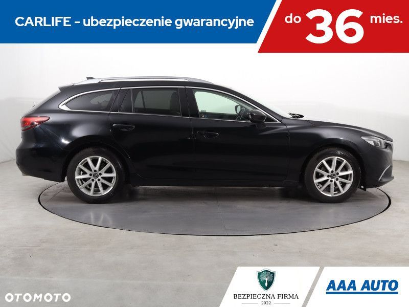
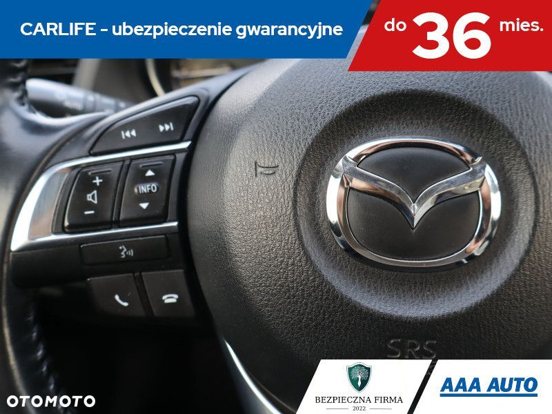
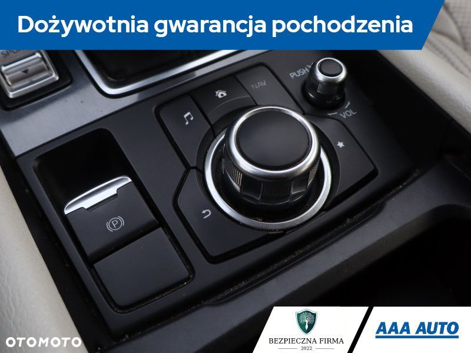
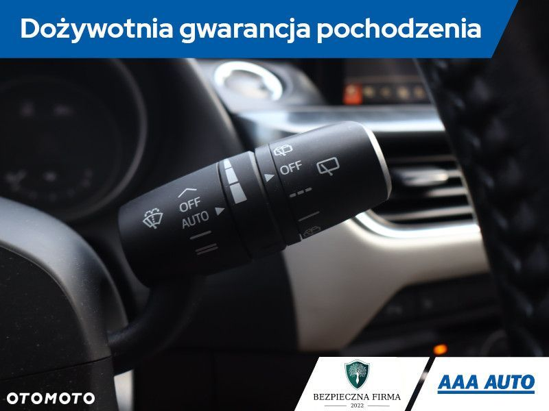
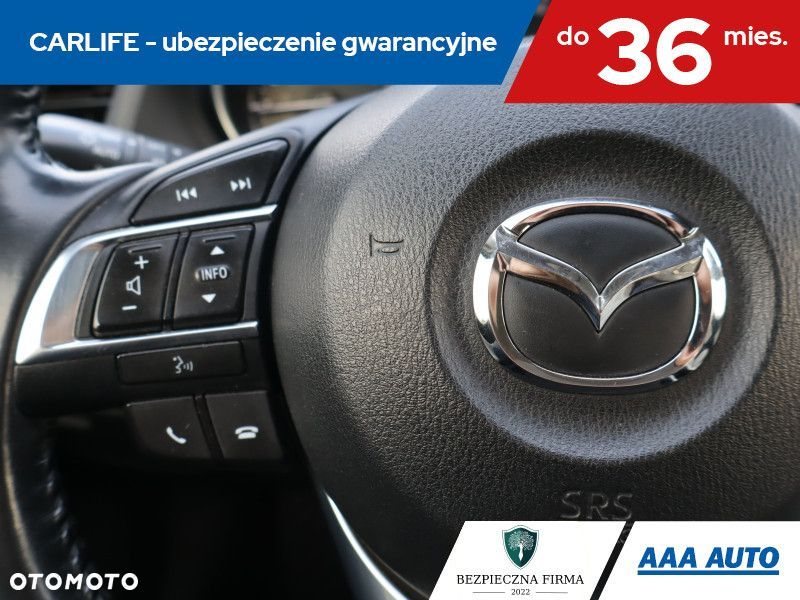
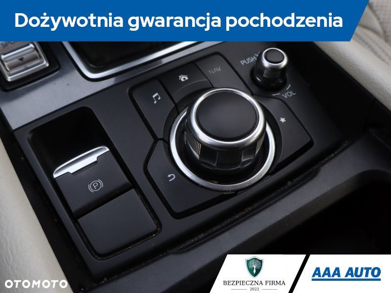
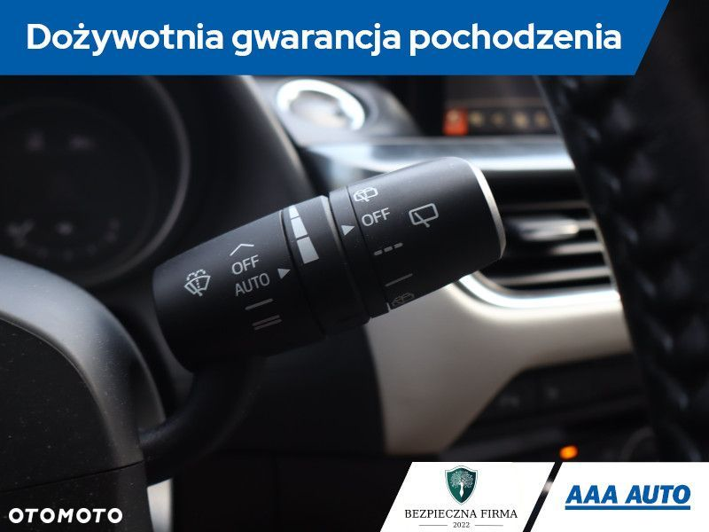

Mazda 6
Silnik: 2.5 Skyactiv-G (192 KM) 6-Automat
Lakier: czarny Metalik
DOSTĘPNY OD RĘKI – szukasz innej wersji? Zadzwoń!
✔ Samochód krajowy
✔ Książka serwisowa
✔ Forma finansowania: kredyt
Cena: 60 000 PLN
Miesięczna rata już od 357 PLN*
Zainteresowany? Zadzwoń, nawet w niedzielę i święta!
OPIS POJAZDU:
Ta Mazda 6 pochodzi z Polski i jest wyposażona w mocny silnik benzynowy 2.5 Skyactiv-G. Silnik o pojemności 2488 cm3 generuje moc 192 KM. Samochód posiada elektroniczną książkę serwisową, co jest dodatkowym atutem. Mazda 6 oferuje wiele atrakcyjnych funkcji. Wyposażona jest w wyświetlacz Head Up Display, który umożliwia kierowcy łatwe monitorowanie kluczowych informacji o samochodzie bez odrywania wzroku od drogi. Przednie światła LED zapewniają doskonałą widoczność w nocy. Fotele są skórzane i podgrzewane, co zapewnia komfort podczas chłodniejszych dni. Klimatyzacja jest automatyczna, co umożliwia łatwe utrzymanie odpowiedniej temperatury w samochodzie. Kierownica jest skórzana i wielofunkcyjna, co ułatwia obsługę różnych funkcji samochodu. Dodatkowo, samochód jest wyposażony w łopatki zmiany biegów, co umożliwia łatwą i szybką zmianę biegów.
Mazda 6 Combi to wyjątkowo komfortowy i przestronny samochód, który oferuje doskonałe wyposażenie. Jest to model, który łączy w sobie elegancję, funkcjonalność i przystępną cenę, co czyni go atrakcyjnym wyborem dla wielu kierowców.
PARAMETRY TECHNICZNE:
• Rok produkcji: 2015
• Przebieg: 127 516 km
• Paliwo: benzyna
• Nadwozie: Kombi
• Miejsca siedzące: 5
• Przegląd techniczny: ważny do 03/2026
DODATKOWE WYPOSAŻENIE:
klimatyzacja automatyczna
ABS
tempomat adaptacyjny
fabryczne alufelgi
ASR
przyłącze bluetooth
zamek centralny
komputer pokladowy
elektrycznie składane lusterka
elektryczny hamulec ręczny
ESP
światła przeciwmgielne
podgrzewane fotele
wyświetlacz head up
światła do jazdy dziennej LED
skórzane fotele
system audio premium
tylne światła LED
czujnik deszczu
regulacja foteli z pamięcią
system Stop Start
hak holowniczy
kontrola ciśnienia opon
łącze USB (audio)
poduszki powietrzne
światła do jazdy dziennej
alarm
zestaw naprawczy z kompresorem
asystent hamowania przed przeszkodą
elektryczne fotele
wspomaganie wjazdu pod górę
mocowanie fotelików dziecięcych isofix
zamek zbliżeniowy
uruchomianie zbliżeniowe
system kontroli martwego kąta
system kontroli pasa jazdy
wielofunkcyjna kierownica
nawigacja
elektryczne lusterka
EPS
elektryczne szyby
kamera cofania
relingi dachowe
radio samochodowe
przyciemniane szyby
FINANSOWANIE I GWARANCJA:
• Kredyt dostępny na każde auto – decyzja w 1 dzień!
• Leasing dla firm – procedura uproszczona!
• Dożywotnia gwarancja legalnego pochodzenia pojazdu!
• Program "10 dni na wymianę auta bez podania przyczyny"!
• Ubezpieczenie Carlife – ochrona mechaniczna do 36 miesięcy!
Lokalizacja pojazdu jest aktualna na dzień wystawienia ogłoszenia.
Przed przyjazdem prosimy o kontakt telefoniczny w celu potwierdzenia dostępności i umówienia wizyty. Na życzenie dostarczymy auto do najbliższego salonu.
DZWOŃ CODZIENNIE OD 8:00 DO 21:00 – NAWET W WEEKENDY I ŚWIĘTA!
AAA AUTO – największy dealer samochodów używanych w Europie Środkowej! * Reprezentatywny przykład kalkulacji kredytowej: Samochód Ford Focus rocznik 2020, cena samochodu 55000 zł, wkład własny 30% (16500 zł). Całkowita kwota kredytu konsumenckiego 38 500 zł, 60 miesięcznych rat równych po 826,18 zł. Okres obowiązywania umowy: 60 miesięcy. Oprocentowanie stałe w skali roku: 9,29%. Rzeczywista roczna stopa oprocentowania: 9,29%. Całkowita kwota do zapłaty: 49570,8 zł. Całkowity koszt kredytu: 11071,08 zł (w tym prowizja za udzielenie kredytu 770 zł, odsetki 10301,08 zł). Przyznanie i warunki kredytu zależą od pozytywnej oceny zdolności i wiarygodności kredytowej. Niniejsze ogłoszenie ma charakter informacyjny i nie stanowi oferty handlowej w rozumieniu art. 66 § 1 Kodeksu Cywilnego.

 
